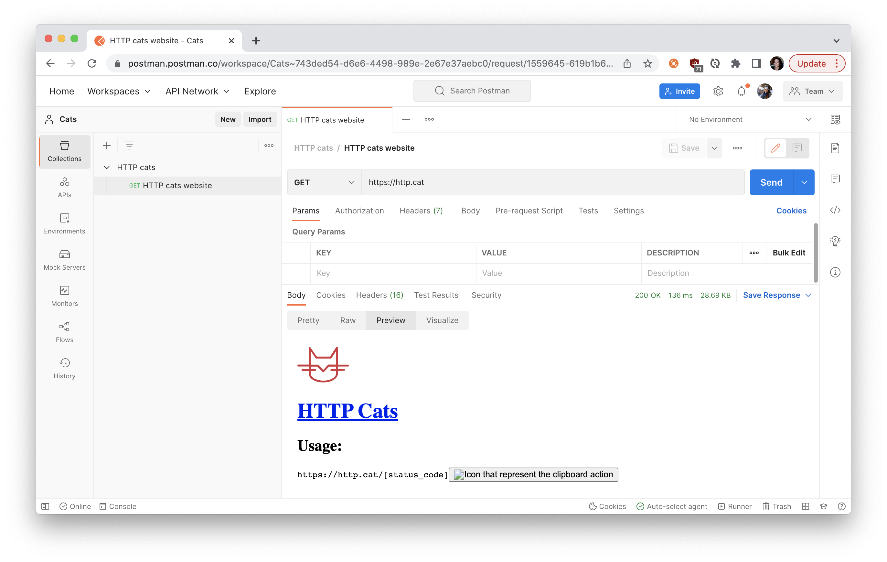

If you're new to APIs, then you might only be familiar with a few HTTP status codes. To help you learn more HTTP status codes and build your first Postman Collection, let's walk through this beginner's tutorial working with the playful HTTP Cats API. And if you're allergic to cats, use HTTP Status Dogs instead.

Prerequisites
- A Postman account
- Introductory knowledge of APIs
What You'll Learn
- Explain what an API client is
- Authorize and send HTTP API requests
- Write tests to assert the behavior of APIs is as expected
- Use variables to store and reuse information
- Debug and troubleshoot unexpected behavior
What You'll Build
- A Postman Collection consisting of requests, variables, and tests.
When you're talking to an API, the server sends back an HTTP code to signal the status of your request. You might be familiar with 200 OK or 404 Not Found. But there are also rare codes not often seen in the wild.
Industry standards typically group HTTP status codes into five categories according to the following scenarios:
- 100s Informational responses
- 200s Successful responses
- 300s Redirects
- 400s Client errors
- 500s Server errors
Despite these standards, it's still up to the developer creating the API to account for these scenarios and return a meaningful code or error message. I've encountered APIs that return 200 OK, even when things are not okay.
But when these codes are used accurately and consistently, this information from the server helps you figure out what's really going on.
Let's build our first Postman Collection
Let's build our first Postman Collection and have fun exploring the HTTP Cats API. Follow along in Postman by forking this example collection, "Learn HTTP status codes with cats", and environment to your own workspace. Or follow these steps to build your own collection from scratch.

Begin by creating a new Postman workspace. This can be a team workspace if you're planning to collaborate with someone else. But I'm using a personal workspace called Cats to organize all of my important, but private, cat-related work.
 Create a new personal workspace
Create a new personal workspace
In Postman, paste the URL https://http.cat. Hit Send. We see Postman acting like our web browser, displaying the underlying HTML returned for the HTTP Cats website.
 Use Postman as an API client
Use Postman as an API client
Let's save the request to a new Postman Collection to keep all of the API calls we'll make. Call the collection HTTP cats and the request HTTP cats website.
 Keep all the API calls in a collection
Keep all the API calls in a collection
Take a look at the response on the bottom. The Pretty tab of the response body shows the HTML skeleton of the web page. The Raw tab shows the raw response from the server. The Preview tab looks kind of like the web page in our browser, except with JavaScript and images disabled. We'll talk about the Visualize tab a bit later on.
A website has an API that returns stuff like text and images
People usually write tests under the Tests tab. But you can write any kind of code to run after Postman receives a server response. For example, let's add this JavaScript to scrape the web page returned from the server. We'll use cheerio to scrape all the hyperlinks. It's one of the libraries that comes preinstalled in the Postman Sandbox.
let webpage = pm.response.text();
const $ = cheerio.load(webpage);
let codes = [];
$("a").each(function () {
let link = $(this).attr("href");
if (link[0] == "/" && link.length > 1) {
codes.push({
code: link,
});
}
});
 Code to scrape all the hyperlinks
Code to scrape all the hyperlinks
In programming, environments help store configuration data and secrets. They're used for saving any information to be used later.
Let's create a new called http-cats and select it as the active environment. Add one more line of code to our test script to save our scraped hyperlinks as an environment variable in Postman.
pm.environment.set("allCodes", JSON.stringify(codes));
 Create a new environment and set an environment variable in the test script
Create a new environment and set an environment variable in the test script
Once you set a variable, you can get it.
Duplicate the first request within our collection and call the new request Get one cat. Delete the script under the Tests tab. Append {{statusCode}} to the end of the URL. The curly braces syntax allows you to use defined variables in the text fields. But wait, we haven't defined a variable called statusCode yet. That's up next.
 Use curly braces to use variables in the text fields like
Use curly braces to use variables in the text fields like
{{statusCode}}
People can use pre-request scripts for setting up their main request (e.g., calculating or retrieving a variable). Let's do that now. Under the Pre-request Script tab, add this code to retrieve all of our scraped hyperlinks and remove one to be used in this request (remember to save this data as a variable so that it can be accessed in the main request):
let arrayOfCodes = JSON.parse(pm.environment.get("allCodes"));
// remove first item to update the URL path
let oneCode = arrayOfCodes.shift();
console.log("Setting this status code: ", oneCode.code);
pm.variables.set("statusCode", oneCode.code);
// re-save the shorter array
pm.environment.set("allCodes", JSON.stringify(arrayOfCodes));
 Pre-request script to get a status code to use in the main request
Pre-request script to get a status code to use in the main request
Let's return to our first request, HTTP cats website, to make sure the code under the Tests tab is running correctly. Hit Send, and verify that an environment variable called allCodes exists and contains an array of objects with HTTP status codes.
 Initialize environment variable containing HTTP status codes
Initialize environment variable containing HTTP status codes
Then return to our second request, Get one cat, to make sure the code under the Pre-Request Script tab is running correctly. Hit Send, and verify the API returns an image of the first status code in the environment variable allCodes.
 Response of a single image
Response of a single image
We can continue cycling through all the status codes that remain in allCodes by continuing to hit Send.
It can be a bit tricky to see exactly what Postman is sending to the server since {{statusCode}} isn't defined until the pre-request script runs when the request is sent. To gain more visibility into the network calls and log statements, open the Postman console:
 Use the Postman console for more visibility into network calls and log statements
Use the Postman console for more visibility into network calls and log statements
Keep exploring with these advanced topics
We've covered a lot of HTTP-and-cats ground already 😻. If you're still hanging in there, let's think about some next possible steps.
- Add another API to the mix: Now that you know how to pass information from one request to another, you can send a tweet or a notification about important cat-related data. Check out the Postman API Network where you'll find a ton of interesting public APIs to add to your mix.
- Build a custom workflow: Use Postman's collection runner to run a bunch of requests in one go, instead of hitting the Send button one request at a time. Schedule a weekly cat collection run to run on Postman servers. Or check out some of the other libraries in the Postman Sandbox. We used cheerio to scrape hyperlinks, but what you can do with code is limitless.
- Visualize a server response: Earlier in this post, we briefly mentioned the mysterious Visualize tab in the response viewer. If you know a bit of HTML and CSS, check out the Postman visualizer to understand what you can do under the Visualize tab. Or take a look at the third request in the example collection for a sneak peek.
Next Steps
Like a cat knocking glasses off the table for fun, you can use Postman to poke at your APIs just to see what happens. Now you know there's a lot more stuff you can do with Postman, so keep playing around.
If you're looking for other cat-related tech, take a look at TheCatAPI and Cat Facts API. If you're curious about Docker and Kubernetes, check out my cat URL shortener.